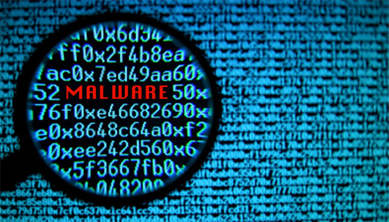

1. Używaj programu antiwirusowego. Ten program będzie cię chronić od szkodliwych plików, które mogą wyrządzić poważne straty.
2. Jeżeli często korzysta się ze swojego komputera, należy wymieniać pastę termiczną co około 6 miesięcy. Jeśli się tego nie zrobi, komputer zacznie się przegrzewać.
3. Pamiętaj o czyszczeniu zbędnych plików z dysków.
4. Nie używaj dużo programów w tle, gdyż zabiera to pamięć ram i spowalnia komputer.
5. Oczyszczaj wnętrze komputera
1. Przegrzewanie, zacinanie i nieoczekiwane wyłączanie się komputera
2. Blue Screen of Death – „niebieski ekran śmierci”
3. Głośna, wzmożona praca dysku
4. Dźwięki „pikania” z wnętrza komputera
5. Problemy z wyświetlaniem grafiki
Złośliwe oprogramowanie to szkodliwe aplikacje lub kody, które uniemożliwiają lub zakłócają normalne korzystanie z urządzeń.
|  |
1. Wirusy - programy lub fragmenty złowrogiego kodu wykonywalnego, który dołącza się, nadpisuje lub zamienia inny program w celu powielania samego siebie bez zgody użytkownika.
2. Robaki - szkodliwe oprogramowanie podobne do wirusów, rozprzestrzeniające się tylko poprzez sieć. W przeciwieństwie do wirusów nie potrzebują programu „żywiciela”. Często powielają się pocztą elektroniczną.
3. Konie trojańskie - nie rozmnażają się jak wirus, ale ich działanie jest równie szkodliwe. Ukrywają się pod nazwą lub w części pliku, który może wydawać się pomocny, jednak po uruchomieniu wcale nie pełnią tej funkcji, której spodziewa się użytkownik. Trojany wykonują w tle operacje szkodliwe dla użytkownika
4. Backdoory - przejmują kontrolę nad zainfekowanym komputerem, umożliwiając wykonywanie na nim czynności administracyjnych, łącznie z usuwaniem i zapisem danych. Umożliwiają intruzom sterowanie systemem operacyjnym poprzez Internet.
5. Spyware - oprogramowanie zbierające dane o osobie bez jej zgody, mogą to być informacje o odwiedzanych stronach, dane dostępowe itp. Programy szpiegujące mogą wykonywać działania bez wiedzy użytkownika.
6. Ransomware - blokuje dostęp do systemu komputerowego lub uniemożliwia odczyt zapisanych w nim danych (często poprzez techniki szyfrujące), a następnie żąda od ofiary okupu za przywrócenie stanu pierwotnego, chociaż nie zawsze pliki zostają przywrócone „całe”.
Laptop jest znacznie bardziej mobilny niż komputer stacjonarny i zajmuje mniej miejsca. Nie musisz korzystać z niego przy biurku. Jeśli często podróżujesz, laptop jest lepszym wyborem niż PC. Komputer stacjonarny zwykle oferuje za to lepsze parametry i wyższą wydajność w tej samej cenie. Wybór pomiędzy laptopem a komputerem powinien być przede wszystkim podyktowany indywidualnymi potrzebami.
Komputery mają wiele zastosowań. Na przykład można zagrać w gre komputerową z kolegami, posłuchać muzyki, sprawdzić swoje umiejętności w testach, kontaktować się z przyjaciółmi, którzy mieszkają daleko ode mnie, znaleść swoje nowe hobby. Jest jeszcze wiele zastosowań do których można wykorzystać komputery.
Jeżeli szukasz komputera do gier, bedzie on kosztował więciej, gdyż mają lepsze podzespoły po to żeby gra komputerowa miała lepszą grafikę i więcej fps. (tym więcej fps tym gra płynniej chodzi). Komputery biurowe i szkolne będą kosztować mniej, gdyż nie wymagają dobrych podzespołów. Lepszy procesor, dodatkowy dysk SSD, większa pamięć RAM, karta graficzna zintegrowana lub dedykowana – to wszystko ma znaczny wpływ na końcową cenę komputera.
Powszechnie za pierwszy komputer na świecie przyjęto maszynę ENIAC (Electronic Numerical Integrator And Computer). Została ona zaprezentowana publicznie 14 lutego 1946 roku, choć prace nad jej budową rozpoczęły się cztery lata wcześniej. Ważył on ponad 27 ton i miał 167 metrów kwadratowych.
|
|
- procesor (cpu)
- płyta głowna
- pamięć ram
- dysk główny/twardy
- karta graficzna (gpu)
- zasilacz
- wiatraki (w obudowie komputera)
- system - Windows 11
- cpu - 12th Gen intel(R) Core(TM) i5-12400F, chłodzenie wodne :)
- pamięć ram - 32GB
- dyski - Dysk główny C około 1TB(na dysku C mam system), dysk D 500GB, dysk E 500gb, dysk SSD F 500Gb
- gpu - nvidia RTX 3060 Ti 8gb (ta karta graficzna ma 3 wiatraki)
- zasilacz - niewiem jaki mam zasilacz ale chyba ma 650w
- wiatraki - 2 w obudowie (pewnie będe dodawał więcej w przyszłości)

|
Linki do stron z których korzystałem podczas tworzenia tej strony:
https://pl.wikipedia.org/wiki/Z%C5%82o%C5%9Bliwe_oprogramowanie
https://www.komputronik.pl/informacje/jak-dbac-o-komputer/amp/?gclid=CjwKCAiA7IGcBhA8EiwAFfUDsU2tjVrFCKjJAz_v1cNJf1uhDwTQuiQbEYTOxWT1d-9InqhKih-qvRoCbvkQAvD_BwE&gclsrc=aw.ds
https://xck.pl/komputery-ciekawostki-informacje-fakty/
https://polki.pl/rodzina/nastolatki,do-czego-sluzy-komputer,10305584,artykul.html
Autorzy strony:
- Piotr Stanisz
- Jakub Hemmerling